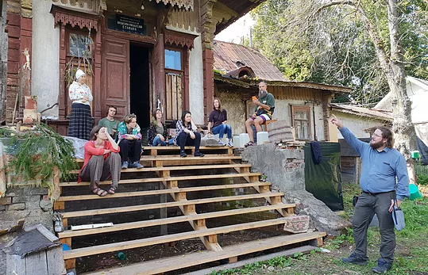
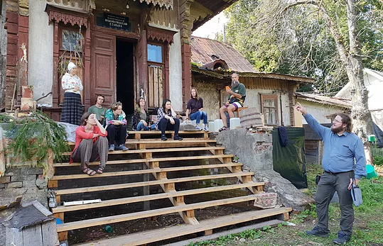

День 1
Встречаемся в гостинице.
Заселение с 14 часов (по запросу возможен ранний или предварительный заезд - оплачивается дополнительно).
Знакомство.
Во второй половине дня:
- кураторская экскурсия по выставке "Артефакты" в усадьбе Рябушинских;
- обсуждение формата мастер-класса;
- лекция о видах фотопроектов;
- просмотр привезенных с собой работ участников;
- постановка задач, обсуждение возможных тем, локаций для съемок;
- съемка в усадьбе и окрестностях;
- ужин в сохранившихся интерьерах парадной столовой усадьбы, общение, обмен мнениями.

 

День 2
Пешеходная экскурсия по историческому центру города "Вышний Волочёк - русская Венеция".
Съемка в городе.
Обсуждение, разбор отснятого материала, корректировка выбранных тем
День 3
Пешеходная экскурсия по городку Рябушинских.
Работа над проектами, съемки.
Обсуждения, разбор отснятого материала.
День 4
Работа над проектами, съемки.
Обсуждения, разбор отснятого материала.
При желании - выезд на пикник (оплачивается дополнительно).

День 5
Завершение работы, подведение итогов.
Отъезд из гостиницы в 13 часов.
По запросу возможен поздний выезд(оплачивается дополнительно).
| Место | Вышний Волочек |
|---|---|
| Стоимость | 10000р. |
| Количество человек | Группа 5-7 человек |
| Входит в поездку |
Мастер-класс по созданию фотопроекта; ежедневный просмотр и обсуждение материала с преподавателем; проживание в гостинице со всеми удобствами, завтраками, wi-fi (5 дней/4 ночи); кураторская экскурсия по выставке "Артефакты" в усадьбе Рябушинских; ужин в сохранившихся интерьерах парадной столовой; пешеходная экскурсия "Вышний Волочёк - русская Венеция"; пешеходная экскурсия "Вышний Волочёк - город текстильщиков". |
| Не входит в поездку |
Проезд в Вышний Волочек; трансфер до гостиницы ( 2 км от вокзала, такси 100руб.); транспорт до центра города; обеды, ужины (комплексный обед/ужин в гостинице 250-300 руб); доплата за одноместное проживание (5600руб.); доплата за ранний заезд/поздний выезд; выезд на одно из близлежащих озеро или Вышневолоцкое водохранилище; пикник, купание, съемка; личные расходы (алкоголь и прочее); |
| Иметь с собой |
Фотокамера(смартфон), аксессуары; ноутбук для предварительного просмотра и отбора своих фотографий; 15-30 своих лучших и/или любимых фотографий. |